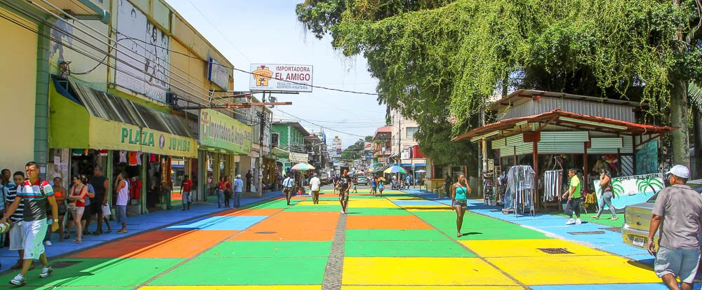

Limón
Limón es una provincia de Costa Rica, en el extremo oriental del país. Límita al norte con la República de Nicaragua, al noreste con el Mar Caribe, al oeste con Heredia, Cartago y San José, al suroeste con Puntarenas y al sureste con Panamá. Limón está marcado por una gran diversidad cultural: con una población predominantemente de etnia afro-descendiente y con importantes rasgos de la cultura indígena costarricense, la afrocaribeña, blancos y chinos, cada grupo le aporta a la zona su estilo propio. Es una de las zonas donde convergen más culturas en el país.
 Volver